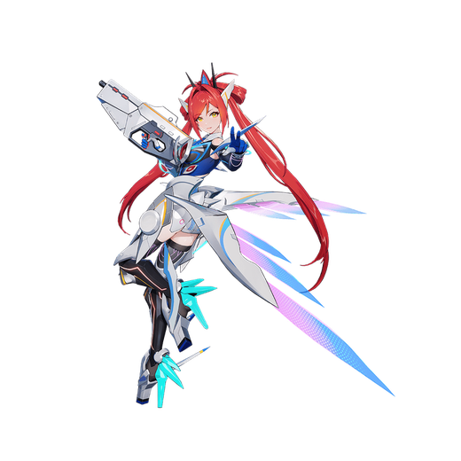

基本データ
- コスト
- 2.0
- 体力
- 未入力
- 赤ロック
- 29
- 動画
- 登録動画

Move Table
| 射撃 | 名称 | 弾数 | 威力 | 備考 |
|---|---|---|---|---|
| メイン射撃 | 専用マシンガン | 60 | 354 | 1クリック12発 |
| 後メイン射撃 | 反動射撃 | 1 | - | 333(2凸:455) |
| Nサブ射撃 | 熾天六翼·包囲 | 1 | 210 | 包囲射撃 |
| 前サブ射撃 | 熾天六翼·斉射 | 75 | - | 前面に6つ並べて斉射 威力は2ヒット時 |
| 横サブ射撃 | 熾天六翼·連射 | 210 | - | 順次発射 |
| 後サブ射撃 | 飛翼衝擊 | 1 | 345 | 旧サブ格闘サブ格闘派生が独立 |
| 後サブ格闘 | 六翼降臨 | - | - | 六翼降臨状態に換装 |
| 格闘 | 名称 | 入力 | 弾数 | 威力 | 備考 |
|---|---|---|---|---|---|
| メイン格闘 | 光焔の刃 | NNN | - | - | 528 サブ格派生 |
| 聖詠の裁き | N→サ格 | - | - | 723 | 連撃派生 |
| NN→サ格 | - | - | 797 | ||
| NNN→サ格 | - | - | 847 | 出し切り以外の任意段から派生可能 | |
| 横格闘 | 光焔の刃 | 横NNN | - | - | 758 サブ格派生 |
| 聖詠の裁き | 横→サ格 | - | - | 723 | |
| 横N→サ格 | - | - | 723 | ||
| 横NN→サ格 | - | - | 790 | ||
| 前格闘 | 光焔の刃 | 前 | - | - | 210 サブ格派生 |
| 聖詠の裁き | 前→サ格 | - | - | 738 | |
| サブ格闘 | 巡遊衝擊 | サブ格 | 1 | 360 | 射撃バリア付き |
| バーストアタック | 名称 | - | 威力 | ||
| SB/FMDC | - | 備考 | |||
| バーストアタック | 天使の力・セラフィム | - | 826/762 | 無限赤ロック射撃。六翼降臨状態に換装 |